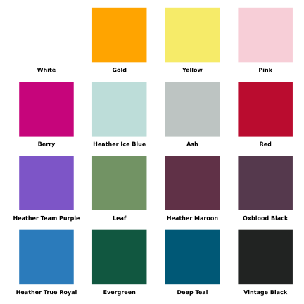
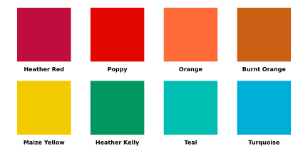

The Stonewall Dodgeball league in DC has a problem - we need to select more shirt colors for additional teams, but it looks like we’ve already used the entire rainbow!
Note: This article was originally published as pure HTML on my GitHub. I have since migrated it to my Quarto blog for easier maintenance and updates.
Code
%load_ext autoreload%autoreload 2import numpyimport pandas as pdfrom colormath import color_objects, color_diffimport mathfrom dodgeball_colors_3 import display_palettedef patch_asscalar(a):return a.item()setattr(numpy, "asscalar", patch_asscalar)color_df = pd.read_csv("../../data/all_colors.csv")colors = ["White","Gold","Yellow","Pink","Berry","Heather Ice Blue","Ash","Red","Heather Team Purple","Leaf","Heather Maroon","Oxblood Black","Heather True Royal","Evergreen","Deep Teal","Vintage Black",]current_color_indices = [int(color_df[color_df["Color Name"] == color].index[0]) for color in colors]display_palette(selected_colors=current_color_indices, color_df=color_df, filepath="assets/starting_palette.svg")

A color palette with 16 colors
Luckily there are many other colors to pick from, you can see some below:
Heather color palette
But how do we figure out which color to pick?
We can gather detailed information about the shirt color using the Pantone Matching System (PMS) codes beneath each shirt.
The PMS provides a LAB color value, which is most useful to us.
Image showing Pantone Matching System Color Swatch
What is LAB?
Think of LAB color as a way to describe colors that matches how our human eyes actually see them. LAB breaks color down into three parts that make more intuitive sense:
L - How light or dark something is (like adjusting the brightness on your TV)
A - How red or green something is
B - How blue or yellow something is
Using LAB values, we can plot colors in 3D space! You can see the colors currently selected below.
Explore The Current League Colors in 3D!
Code
from dodgeball_colors_3 import generate_lab_3d_all_colorsimport randomfiltered_df = color_df.iloc[current_color_indices].copy()generate_lab_3d_all_colors(df=filtered_df, figure_title="Current League Colors in 3D")
Since LAB is a perceptually uniform space, the 3D distance between colors represents how similar two colors are.
For fun, we can also plot every color (you may want to zoom in):
Code
generate_lab_3d_all_colors(df=color_df, figure_title="All Color Options in 3D")
Picking New Colors
Now that we have our colors in 3D space, we can begin our search for new colors.
Our goal is to find ~8 colors that are the furthest from the current set of colors.
While computing the distance in 3D space is an obvious solution (and how the first ΔE formula worked), special formulas have been developed for more accurately depicting the distance between two colors. These are:
ΔE CMC (1984): Used for textiles
CIE 2000: Industry standard
I have used both of these formulas to determine which colors are the furthest from those already chosen for the league.
Delta E-CMC Furthest Colors (From Most to Least Distant)
Code
#1. new df without the existing colors#2. sort df by average_cmc and obtain top 8 indices#3. sort df by average cie and obtain top 8 indices mask =~color_df['Color Name'].isin(colors)filtered_df = color_df[mask].copy()top_8_cmc_indices = filtered_df.nlargest(8, 'average_cmc').index.tolist()top_8_cie_indices = filtered_df.nlargest(8, 'average_cie').index.tolist()display_palette(selected_colors=top_8_cmc_indices, color_df=color_df, cols=4, filepath="assets/top_cmc.svg", sort_rainbow=True)display_palette(selected_colors=top_8_cie_indices, color_df=color_df, cols=4, filepath="assets/top_cie.svg", sort_rainbow=True)

Top 8 Most Distant Colors using ΔE CMC
Explore the new colors in 3D below, new colors are marked with an asterisk *